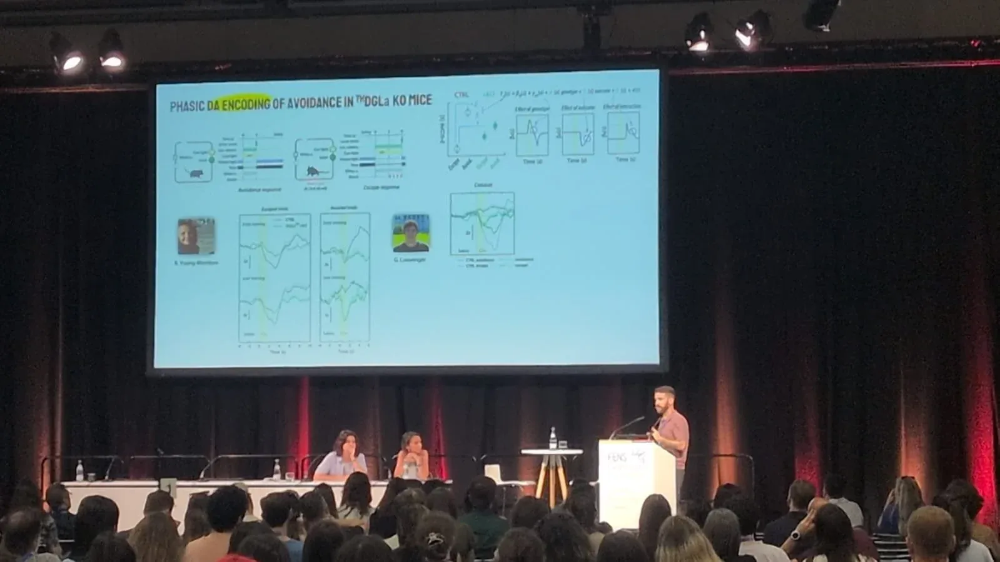

Caitlin Madden publishes her postbaccalaureate work from the NIH in Neuron: An inherited hypomorphic variant in PIEZO2 reveals structural features of mechanotransduction. Congratulations, Caitlin!
Read the paper
News
Miguel presenting lab data on stage at the FENS meeting, July 2026
Show
2026
Grace Phillips joins the lab as a graduate student. Welcome, Grace!
Miguel presents some of the lab's data at the FENS Forum. Thanks to Drs. Melis and García-Baos for the invitation.
The lab hosts Dr. Nicolas Massaly (UCLA) as guest speaker in the Anatomy and Cell Biology Seminar Series.
Caitlin Madden joins the lab as a graduate student. Welcome, Caitlin!
Miguel publishes the main paper from his postdoctoral work in Cell Reports: Midbrain endocannabinoids actuate dopamine-based action selection.
Read the paperJeet Patel receives a Chancellor's Undergraduate Research Award (CURA) to study tensor representations in people performing effortful tasks. Congratulations, Jeet!
2025
The lab records its first neurons. Neuropixels galore.
First lab outing!
Marie Galindo joins the lab. Welcome, Marie!
Miguel gives a talk in Northwestern University's Neuroscience Seminar Series.
Grace Crespo becomes the lab's first member. Welcome, Grace!
Miguel gives an invited talk at the University of Valencia, in his home region of Spain.
The lab opens in the UIC Department of Anatomy and Cell Biology.
Miguel starts as Assistant Professor at UIC.